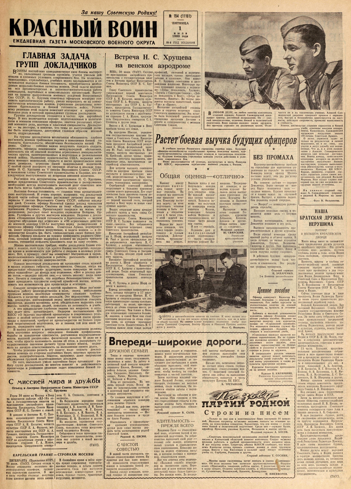

у
_ на
_Москву отправлено
_ ГЛАВНАЯ ЗАДАЧА `
ГРУПП ДОКЛАДЧИКОВ
И Воины настойчиво совершенствуют свое боевое мастерст-
i BO, овладевают грозным оружием, учатся умелым дей-
BHAM в сложных условиях современного боя. На полигонах,
‘танкодромах, стрельбищах, учебных полях закладывается и от-
‘тачивается высокая боевая
_ димые морально-боевые качества воинов. Этой задаче подчине-
вся организаторская и политико-воспитательная работа
командиров, партийных и комсомольских организаций. Высту-
a Ha приеме выпускников военных академий Вооруженных
ил СССР, Н. С. Хрущев советовал офицерам всемерно уси-
ливать идеологическую работу, умело направлять ее на комму-
_Нистическое воспитание воинов, укрепление дисциплины, повы-
шение бдительности и боевой готовности войск. Успеш-
ному решению этой задачи помогают агитация и пропаганда,
ольшая роль в которой принадлежит группам докладчиков.
Группы докладчиков создаются в частях при партийных
бюро. В них включаются хорошо подготовленные в политиче-
ском и военном отношении офицеры, знатоки различных отрас-
лей военного дела, мастера и классные специалисты. Докладчи-
ки — не лекторы, и понятно, что темы их выступлений долж-
ны быть конкретными, диктуемые главным образом жизнью
части, подразделений.
‚На группы докладчиков возлагается обязанность глубоко
раз яснять воинам требования партии о повышении боевой го-
товности, бдительности, обеспечении безопасности нашей Po-
дины. Сейчас собенно важно вооружить каждого солдата,
сержанта, офицера пониманием международной обстановки,
рассказать им 06 опасной политике агрессивных империалисти-
ческих кругов, заинтересованных в подготовке и развязывании
новой войны. Нынешнее правительство США, выражая инте-
‘Pech! военных монополий, открыто и нагло провозгласило шпи-
онаж, диверсии, агрессию своей национальной политикой.
С особой силой раскрыто их звериное обличье в докладе това-
рища Н. С. Хрущева на У сессии Верховного Совета СССР,
В заявлении главы Советского правительства в Париже, его по-
следующих выступлениях по вопросам внешней политики.
Раз’ясняя эти исторические выступления Н. С. Хрущева,
новые предложения Советского правительства о разоружении,
необходимо всегда подчеркивать высокий долг советских вои-
нов быть всегда бдительными, держать порох сухим.
Высокая боевая готовность — главная тема пропагандист-
ских выступлений. И очень хорошо, например, что докладчики
Н-ской части сейчас активно раз’ясняют личному составу ма-
териалы У сессии Верховного Совета СССР, события послед-
них дней. Скажем, офицер Колонтай сделал доклад танкистам
подразделения офицера Смагина на тему «Быть верными за-
щитниками Родины». Пропагандист опирался на жизнь под-
разделения, раскрыл ‘опыт младших сержантов Бойцова, Ор-
лова, Голицына и других мастеров вождения. Недавно с докла-
дами «Повышение боевой готовности и бдительности — верное
средство обуздания сил агрессии» и «Об агрессивных действи-
ях военной авиации США» выступил перед разведчиками и
саперами офицер Севостьянов. Советская Армия, подчеркнул
он, имеет первоклассное вооружение, и задача воинов — в CO-
вершенстве владеть им, быть специалистами своих боевых про-
фессий. Офицер сослался на пример коммуниста рядового Оже-
‘гова, который успешно выдержал экзамен на радиста третьего
класса, готовится повысить классность еще на одну ступень.
Жизнь настоятельно требует, чтобы докладчики ближе сто-
лли к воннам, шли туда, где куется боевое мастерство, › находи-
_ ли время и возможности для работы с людьми в полевых усло-
виях. Вот, к примеру, смог`же коммунист Митрюшкин в парке,
воспользовавшись перерывом в работе, рассказать воинам о
происках американских империалистов.
Однако некоторые докладчики не проявляют столь нужной
в наших условиях гибкости, оперативности. Ожидая, когда им
‘предоставят «большую» аудиторию, такие товарищи не пыта-
ются «снизойти» до взвода или отделения. «Вот и доклад дав-
но готов, — нередко сетуют они, —а читать некому: люди заня-
ты». Нечего и говорить, что подобная безынициативность Me-
шает преодолеть трудности кипучей армейской жизни, исполь-
зовать все возможности для пропаганды и агитации.
Следует остерегаться и другой крайности. Ведя раз’ясни-
тельную работу непосредственно в поле, перед небольшими
группами воинов, некоторые коммунисты снижают ‘требова-
тельность к качеству своих докладов. Это недопустимо. Напро-
° тив, докладчик, поставленный перед необходимостью говорить
° накоротке, ‘должен возможно ярче, убедительнее выразить свои
‘мысли, зажечь сердца людей, повысить их активность в учебе.
: А это предполагает глубокое знание тех вопросов, о KOTO-
рых ведет речь пропагандист. Недаром постановление ЦК
КПСС «О задачах партийной пропаганды в современных усло-
виях> с особой остротой ставит вопрос о тесной связи пропа-
ганды с практикой, требует от пропагандистов не только хоро-
‘mei теоретической подготовки, но и знания той или иной OT-
расли, передового опыта.
В наших условиях в центре внимания докладчиков должны
быть постоянно вопросы овладения боевыми профессиями,
борьбы за повышение классности, достижения взаимозаменяе-
мости, высокой дисциплины, физической закалки. И дело не в
том, чтобы просто напоминать людям об этом, а раскрывать го-
сударственное значение ратного труда наших воинов, подни-
мать их личную ответственность за выполнение своего долга.
Чтобы успешно решить эту задачу, надо оказать доклад-
чикам помощь со стороны партийных бюро, опытных пропаган-
дистов, политработников. Многое, например, дают творческие
обсуждения группой подготовленных докладов.
От того, насколько умело партийное бюро организует ра-
и действенность
боту групп докладчиков, во многом зависят
пропаганды и успешное решение задач повышения боевой го-
TOBHOCTH.
С миссией мира и дружбы
Отъезд в Австрию Председателя Совета Министров CCCP
Н. С. Хрущева
Утром 30 июня из Москвы в Вену | хоза С. A. Степанов,
на воздушном лайнере «ИЛ-18» от- | эксперты.
был с государственным визитом по На Внуковском
приглашению австрийского прави-
тельства Председатель Совета Мини-
стров CCCP Н. С. Хрущев с семьей.
В поездке в Австрию H, С. Хру-
щева сопровождают: первый заме-
стилель Председателя Совета Мини-
стров CCCP A, Н. Косыгин, министр
культуры СССР Е. А. Фурцева, ми-
нистр иностранных дел СССР А. A.
Громыко, председатель Государствен-.
‘ного комитета Совета Министров
СССР. по культурным связям с зару-
бежными странами Г. А. Жуков,
‘председатель Свердловского совнар-
нев, Н. Г. Игнатов,
дарственными
телей трудящихся Москвы.
мира и дружбы.
(ТАСС).
КАРЕЛЬСКИЙ ГРАНИТ — СТРОЙКАМ МОСКВЫ
ПИТКЯРАНТА (Карельская АССР),
30 июня. (ТАСС). Сегодня отсюда в
несколько же-
лезнодорожных платформ, ‘гружен- | увеличится. Сюда уже поступили
ных карельским гранитом. мае | передвижные компрессорные уста-
п июне стройки столицы получили | новки, буровые станки, тракторные
более пятисот вагонов этого камня. } погрузчики, экскаватор.
готовность, приобретаются необхо-.
советники и
аэродроме главу
Советского правительства провожали
товарищи А. Б. Аристов, Л. И. Бреж-
Ф. Р. Козлов,
0. В. Куусинен, А. И. Микоян, Н. А.
Мухитдинов, Jl. С. Полянский, Н. М:
Шверник, П. Н. Моспелов и другие.
На аэродроме, украшенном госу-
флагами Советского
Союза, находились сотни иредстави-
Собравшиеся тепло проводили гла-
ву Советского правительства. поже-
лали ему успехов в новой миссии
В ближайшее время в забои карь-
ера придет современная горнодобы-
вающая техника, и Добыча гранита
За нашу Советскую Родину!
РАСНЫЙ ВОИН
ЕЖЕДНЕВНАЯ ГАЗЕТА МОСКОВСКОГО ВОЕННОГО ОКРУГА
SHRMERERESRERC URE ERE RE REE URE ERR!
№ 154 (11161)
ПЯТНИЦА
1
нюля
1960 года
39-й ГОД ИЗДАНИЯ
Встреча Н. С. Хрущева
на венском
ВЕНА, 30 июня. (ТАСС). Сегодня
по приглашению австрийского пра-
вительства с государственным визи-
том в Австрию прибыл Председатель
Совета Министров CCCP Н. С. Xpy-
щев.
Главу Советского
сопровождают первый заместитель
Председателя Совета Министров
CCCP А. H. Косыгин, министр куль-
туры СССР Е. А. Фурцева, министр
иностранных дел CCCP А. А. Гро-
MBIKO, председатель Государственно-
го комитета Совета Министров СССР
по культурным связям с зарубежны-
ми странами Г. А. Жуков, председа-
тель Свердловского совнархоза С.А.
Степанов и другие лица.
Вместе с Н. С. Хрущевым в Вену
прибыли члены его семьи. ,
На аэродроме, Швехат,
ном государственными флагами Ав-
стрии и Советского Союза, Председа-
теля Совета Министров CCCP serpe-
чали президент Австрийской респуб-
лики А. Шерф, федеральный канц-
лер Ю. Рааб, вице-канцлер Б. Пит-
терман, министр иностранных дел
Б. Крейский, другие члены прави-
правительства
тельства, депутаты парламента, офи- ||
циальные лица, представители ав-
стрийской общественности.
Для ветречи высокого советекого
гостя на аэродром прибыли главы
посольств и дипломатических мис-
сий, аккредитованные в Вене, MHO-
гочисленные представители прессы,
радио, телевидения, кинохроники.
Серебристый советский лайнер
подруливает к большому красивому
зданию нового аэровокзала. Его стро-
ительство было закончено совсем‘ не-
давно, и Никита Сергеевич Хрущев
— первый высокий гость, который
прибыл в Вену через ее новые «B03-
душные ворота».
Воздух сотрясают залпы артилле-
рийского салюта в честь главы Co-
ветского правительства.
Председатель Совета Министров
CCCP Н. С. Хрущев появляется на
трапе . самолета. Все собравшиеся
тепло и сердечно. встречают главу
Советского правительства.
Президент Австрийской республи-
ки А. Шерф, федеральный канцлер
Ю. Рааб и другие официальные ли-
ца направляются навстречу Н. С.
Хрущеву, с которым обмениваются
приветствиями. Торжественно звучат
гимны Советского Союза и Австрии.
Н. С. Хрущев обходит строй почет-
ного караула.
Президент Австрийской республи-
ки доктор А. Шерф обращается к
Председателю Совета Министров
CCCP Н. С. Хрущеву с приветствен-
ной речью. Тепло встреченный при-
сутствующими, глава Советского
правительства произнес ответную
речь. i
Н. С. Хрущев и доктор Шерф ca-
Дятея в машину.
Кортеж автомашин направляется в
Вену, которая находится в 17 кило-
метрах от аэродрома Швехат. Н. С.
Хрущева и сопровождающих его лиц
тепло приветствуют группы крестьян,
работающих Ha полях, простираю-
щихся по обеим сторонам шоссе, до-
рожные рабочие. Чем ближе к Вене,
тем встречающих становится больше.
И, наконец. в самой Вене они стоят
плотными шеренгами по обеим сторо-
нам улиц, по которым проезжают
советские гости. Приветствоваль Н. С.
Хрущева вышли люди самых разных!
украшен-
аэродроме
профессий, состояний и политиче-
ских взглядов, однако преобладают
рабочие и служащие. Они машут
Н. С. Хрущеву советскими и авст-
рийскими флажками. Некоторые вы-
соко поднимают плакаты с надпися-
ми: «Добро пожаловать, Хрущев»,
«Дружба с Советским Союзом», «Доб-
ро пожаловать в Вену», «Добро по-
жаловать, Никита». Из толпы раз-
даются возгласы приветствий, крики
«Ура» и «Браво».
Население австрийской столицы
тепло и сердечно встретило главу
Советского правительства. Эта ветре-
ча была волнующей демонстрацией
стремления населения Австрии к
дружбе и сотрудничеству с великим
Советским Союзом.
ее ма осу.
$
подготовки. Воин хорошо овладел
ЛЮБОМ ДЕЛЕ, на любом занятии комсомолец
старший сержант Алексей Санжаревский пока-
зывает пример, достойный подражания. Он — уме-
лый авиадесантник, отличник боевой и политической
без промаха стреляет по различным целям. Отли-
Инниниимиим и наи нининини ини рии ии ин ини нию нии няни ними ини er iri iyi Trt iit i it tir ttt ith Lie учебе,
своим оружием, и стойкость.
Растет' боевая выучка будущих офицеров
В учебном центре Рязанского гарнизона горячая пора.
Будущие
офицеры-автомобилисты отрабатывают приемы вождения машин, кур-
санты-артиллеристы совершенствуют огневую и тактическую подготов-
ку, будущие командиры стрелковых взводов учатся действиям в усло-
виях современного боя.
Ниже рассказывается об успехах, достигнутых в честь Пленума
ЦК КПСС,
*
передовыми курсантами
военных училищ г. Рязани.
*
Общая оценка—«отлично»
Нашему взводу | Вначале плохо у нас | нюшкин. °Последова-
предстояло вынол- | получалась наводка | ли команды, и на-
нить боевые зачет- | в цель, задержива- | водчик курсант Ба-
ные стрельбы. На | лось открытие огня. | лашов двумя выетре-
полигон мы приехали | Но каждый продол-.| лами уничтожил обе
еще накануне вече- | жал упорно трениро-‘ | цели. Курсанты Ba-
ром. Командир поста-
ваться. Большую по-
нюшкин и Балашов
вил задачу: за ночь | мощь мы получили | получили оценку «от-
подготовить огневые | от командира взвода | лично».
позиции и быть го- | капитана Милева, Мастерски. вели
товым к открытию | командира батарем | огонь сержант Го-
огня к 8 часам утра. | майора Федченко и | лубенко, курсанты
С этой ‘задачей мы | старшекуреников, ко- | Добрынин, Котиков,
справились успешно. | торые часто давали | Антонов ‘и. другие.
Первые же’ выст- | Нам советы. Общая оценка © взво-
релы показали, что ‘VW Bor — стрельба. | ду — «отлично». .
взвод хорошо .‘подго-
Подавить дзот и
Младший сержант
товилея к ‘боевым | ‘наблюдательный Ю. СВИРСКИЙ.
стрельбам. Действи- | пункт «противника» Рязанское
тельно, тренирова- | — такую вводную артиллерийское
лись мы немало. | получил курсант Ва- училище.
REAPPLIED PLL SL
PLL LPAI
в у автомобилистов занятие по тактике. К нему нужно под-
готовиться. А где это можно лучше всего сделать, как не в клас-
се общей тактики. На снимке (слева направо): отличники
учебы кур-
санты Геннадий Стариков, Виктор Шукин и Николай Процюк занима-
ются у макета,
Фото С. Иванцова.
ДРУЖНОЙ СЕМЬЕЙ
Тепло и сердечно проводили
наши воины своих сослуживцев,
уволенных в запас. На работу в
целинный край поехали младшие
сержанты Кизеев, Печенюк, еф-
рейтор Астахов, рядовые Сивен-
ков, Сидоренко, Олехнович, Ев-
сеенко, Ратин, Михеев, Бежена-
ру, Кибанов и Федотов.
Пока их двенадцать. Но это
лишь первый отряд. Велед за
ним По комсомольским путевкам
в целинный край отправятся еще.
немало энтузиастов.
Co словами напутствия к от’-
езжающим обратился командир
роты капитан Строков.
— Лобрый вам путь, дорогие
товарищи! сказал офицер
завтрашним целинникам. — Же-
лаем больших успехов в труде
на благо Родины.
Обменявшись с однополчана-
ми крепкими рукопожатиями,
друзья дали слово высоко дер-
жать честь воспитанников родной
Советской Армии.
Рядовой Н. ЕВСИН.
_С ЧИСТОЙ.
СОВЕСТЬЮ
В нашей части состоялось со-
брание старослужащих воинов. На
повестке лня был один вопрос:
«0 примерности старослужащих
воинов в повышении боевой го-
TOBHOCTH подразделений».
Доклал сделал командир, кото-
рый говорил 06 инициативе ста-
рослужащих солдат и сержантов,
привел много поучительных при-
меров. В заключение докладчик
призвал присутствующих до по-
слелнего дня пребывания в армии
образцово выполнять свой воин-
ский долг, подготовить себе за-
мену. чтобы поехать на стройки
семилетки с чистой совестью.
Затем выступил ‘младший сер-
жант Василий Лесник, отделение
которого, состоящее из молодых
воинов, ‘стало отличным. Он по-
делилея опытом работы с подчи-
ненными.
Выступили на собрании и дру-
тие воины. Они говорили о TOM,
что старослужащие солдаты и сер-
жанты должны быть образцом в
выполнении служебных обязан-
ностей.
Младший сержант В. САЛО.
БДИТЕЛЬНОСТЬ —
ПРЕЖДЕ ВСЕГО
‚ Владимир Грук — старослужа-
щий воин, отличник боевой и по-
литической подготовки. Он добро-
совестно выполняет свой долг —
готовит себе замену. добивается
‘новых успехов в социалистиче-
ском соревновании. Командир по-
слал на родину отличника пись-
мо. в котором сообщил о пример-
HOM, старательном воине,
Вот что ответил отеп отлични-
ка: «Большое спасибо команди-
рам за воспитание сына. Пере-
дайте ему и всем воинам наш po-
дительский наказ: будьте бдитель*
ны. Это прежде всего, До послед-
| Впереди-широкие дороги..
ней минуты пребывания в ap-
мии отлично выполняйте свои
обязанности, умножайте боевые
традиции».
Письмо это, зачитанное лично-
му составу перед строем. глубоко
взволновало старослужащих вои-
нов. С возросшей энергией 60-
рются они сейчас за выполнение
обязательств, принятых в честь
июльского Пленума ЦА КПСС.
Б. ТРЕТЬЯКОВ.
БЕЗ ПРОМАХА
Вурсанты-автомобилисты прибыли
на. стрельбище для выполнения уп-
ражнения по стрельбе из автомата.
Командир взвода офицер Шилеев
поставил задачу, еще раз раз’яснил
условия упражнения.
На огневом рубеже — курсант
Демьянчук. Зорко смотрит он вие-
ред. Вдруг появляется цель —
грудная мишень. Курсант прицелил-
ся и плавно нажал на спусковой
Крючок. Выстрел, и мишень падает.
Она поражена первой очередью.
‘ — Вперед! — командует руково-
дитель стрельбы,
Проходит несколько секунд, и по-
является новая цель — бегущая
мишень.
Быстро изготовившиесь, курсант
Демьянчук поражает и эту цель.
Высокую натренированноеть про-
‚демонстрировали и другие курсанты.
После стрельб командир Сделал
краткий разбор и об’явил оценки. В
числе лучших он назвал курсантов
Демьянчука, Случко, Веденеева,
Смирнова и других. Они выполнили
упражнение на «отлично». Взвод B
целом получил оценку «хорошо».
В действиях будущих офицеров-
автомобилистов видны были чет-
кость и слаженность. Это резуль-
тат упорных тренировок.
Старший сержант
H, ЗАХАРЕНКО.
1-е Военное автомобильное
училище.
ee erm MRT ED
Ценное пособие
Офицер коммунист Валентин Ва-
сильевич Атаманов — опытный пре-
подаватель. Его любят курсанты 3a
' увлекательные занятия по огневой
подготовке, за чуткость и отзывчи-
BOCTb.
Заботясь о высокой успеваемости
курсантов, офицер Атаманов создал
ценное учебное пособие. Недавно он
выпустил памятку для курсантов,
назвав ее «Стрелковой книжкой».
Эта маленькая книжица служит Oy-
дущим офицерам большим под-
спорьем в повседневной учебе,
«Стрелковая книжка» является хо-
рошим справочником. На ее страни-
цах изложены правила стрельбы из
различных видов оружия, даны
краткие характеристики их боевых
свойств и указания о правилах при-
стрелки и ухода за оружием.
В специальном разделе книжки-
памятки курсант может записывать
результаты своей стрельбы по тому
или иному упражнению, а также ре-
зультаты пристрелки оружия.
Курсанты благодарят преподавате-
ля за ценное пособие.
Курсант Б. КИЛИМНИК.
Рязанское Краснознаменное
высшее общевойсковое
командное училище.
Строки из писем
„.Только за два дня в комсомольское бюро поступило 14 заявле-
ний, Молодые патриоты из’являют желание поехать на освоение це-
лины, на новостройки семилетки. Характерно, что эти воины — отлич-
ники боевой и политической подготовки. Среди них — сержант Бузов,
ефрейтор Просалов, рядовые Булатов, Мельников и, многие другие.
Младший сержант А. БОСОВ.
«.Секретарь комсомольской организации рядовой Киселев написал
письмо в Камчатский областной комитет комсомола. Солдат из’являл
желание работать в рыбной промышленности этого дальнего’ края.
И вот получен ответ. Секретарь обкома ВЛКСМ сообщает, что моло-
дежь Камчатки готова принять славных
воинов в свою трудовую
семью. Вместе с тов. Киселевым в дальний край поедут отличники
учебы тт. Горбунов, Ромашин и другие,
Старший лейтенант Т. СОСНИН.
„..Многие наши сослуживцы хотят поехать в совхоз ож
вец». Об этом желании они написали. друзьям-целинника`”
Получен
ответ: «Приезжайте товарищи, работы хватит. С радостью \меём вас
в нашу семью». Отлично закончив. службу, в «Кантемировец»_ приедут
тт, Сухомяткин, Вишневский, Хакимов, Хамидуллин. ь
И. НИКИФОРОВ.
Успехи, достигнутые старшим сержантом в боевой
зи индийскохо народов.
чается он и на тактических учениях. Алексей Сан-
жаревский уверенно совершает прыжки с парашю-
том, быстро и безошибочно ориентируется Ha мест-
ности, действует сноровисто, проявляя выносливость
С
отмечены многими поощре-
ниями. Комсомолец Санжаревский
награжден нагрудным знаком
«Отличник Советской Армии».
О делах. сержанта судят о не
Н
в
|
и
и
La
a
#
и
и
&
С.
в
и
|.
м
=
s
a
=
и
|.
s
a
ote
только по результатам в личной *
подготовке, но и по TOMY, как я
z
учатся и несут службу его подчи- =
ненные. Что ж, и в этом направ-
лении у Алексея Санжаревского =
имеются уже немалые достиже- &
ния. Воины взвода, заместителем *
командира которого он является, #
настойчиво овладевают боевым *=
мастерством, успешно выполняют #
свои обязательства, взятые в честь *
июльского Пленума ЦК КПСС. §
Вправе, например, старший cep- =
жант гордиться таким своим вос- #
питанником, как рядовой Василий *
=
Морозов. Этот солдат служит еще =
первый год, но уже награжден на- #
=
грудным знаком отличника. я
ee) |
|.
a
и
и
|
a
a
=
s
и
и
и
s
a
|
a
На снимке: старший cep-
жант А. Санжаревский (справа)
и рядовой В. Морозов на заня-
тии.
Фото В. Мельникова.
НАША
БРАТСКАЯ ДРУЖБА
НЕРУШИМА
МИТИНГ
В БОЛЬШОМ КРЕМЛЕВСКОМ
ДВОРЦЕ
Много веков имеет за своими пле“
чами традиционная дружба русского
Эта дружба
особенно ярко расцвела, пустила
тлубокие корни в годы, когда Индия
стала свободным, суверенным госу-
дарством,
Крепость, широта,
ветско-индийских связей, взаимные
симпатии народов двух великих
стран ярко проявились в дни госу-
дарственных визитов премьер-мини-
стра Индии Джавахарлала Неру в
Советский Союз и Председателя Пре-
зидиума Верховного Совета СССР
В. Е. Ворошилова и Председателя
Совета Министров СССР H. С. Хру-
щева в Индию.
Сейчае советские люди в лице
президента Индии Раджендра Праса-
да вновь горячо приветствуют дру“
жественный индийский народ.
Большой Кремлевский дворец. Зал
заседаний Верховного Совета CCCP
украшен государственными флагами
Республики Индии и Советского Co-
за. 30 июня здесь собрались работ
ники промышленных предприятий
столицы, труженики сельского X0-
зяйства Подмосковья, деятели науки
и культуры, студенты, воины Совет“
ской Армии,
На митинге присутствуют посол
Индии в CCCP К. Il. Ш. Менон, гла-
вы и сотрудники дипломатических
представительств, советские и иност-
ранные журналисты,
15 часов. Бурными, продолжи-
тельными аплодисментами собрав-
шиеся в зале приветствуют появле-
ние в президиуме высокого гостя —
президента Индии Раджендра Праса-
да и сопровождающих его лиц, &
также товарищей А. b. Аристова,
Л. И. Брежнева, Н. Г. Игнатова, Ф.Р.
Козлова, 0. В. Куусинена, А. И. Ми-
кояна, Н. А, Мухитдинова, Д. С. По-
лянекого, Н. М. Шверника и других.
Митинг кратким вступительным
словом открыл заместитель предсе-
дателя исполкома Московского город*
ского: Совета A. Н. Никифоров.
Под сводами ‘зала торжественно
звучат гимны Индии и СССР.
Затем на митинге выступили пре
зидент Общества. советско-индийских
культурных связей Н. В. Цицин, за-
меститель председателя Советского
комитета солидарности стран Азии и
Африки писатель А. В. Софронов,
В зале раздаютея. бурные, долго’.
He смолкающие аплодисменты, когда
на трибуну поднимается Иредседа-.
тель Президиума Верховного Совета
CCCP Л. И. Брежнев. Ero яркая
речь была выслушана присутствую-
щими ¢ большим вниманием.
Председательствующий предо-
ставляет слово президенту Индий-
ской Республики Раджендре Прасаду.
В зале. снова возникают бурные,
продолжительные аплодисменты.
Митинг дружбы между народами
Советского, Союза. и Индии вылился
в горячую, манифестацию братства
двух. великих народов, их готовности
всеми силами. отстаивать дело мира
во всем мире, развивать дальше и
крепить. советско-индийское полити-
ческое, экономическое и культурное
сотрудничество, .
(1800). _
и глубина co-